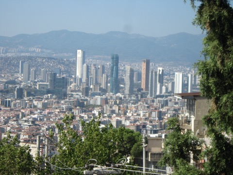
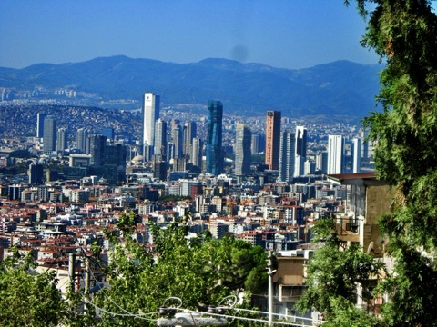

Orijinal
Edit v1IMG_0003 & IMG_0003_1 · 23.2mm Tele
Vaka 1 · Kentsel Katmanlama & Tele Sıkıştırması
İzmir Silüeti: Elektrik Teli Kaosunu Aşma & Katmanlı Derinlik
Kadraj Sorunu: Alt çeyrekteki elektrik telleri ve direk karmaşası kentsel derinliği
kesiyor. Sert öğle ışığı binalarda pus yaratıyor.
Açı & Kadraj Tüyosu: Yarım adım öne çıkıp hafif tilt-up (yukarı açı) yaparak
kabloları çerçeve dışına itin veya 16:9 sinematik kırpma ile alt kaosu tamamen elimine edin.
Renk Reçetesi (Teal & Orange): Dehaze +35, Highlights -40, Shadows +25, Gökyüzü
Camgöbeği doygunluk +20, sıcak binalara kehribar ton bindirme.